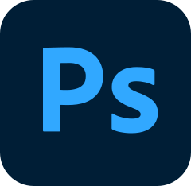
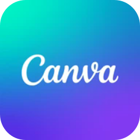
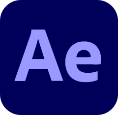
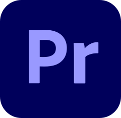
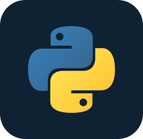
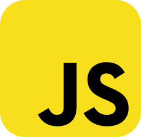

Scroll down to the constellation
What I work with
Design: Figma, Photoshop, Illustrator and Canva
Video: Premiere Pro and After Effects
Code: Python and JavaScript
Design
Figma

Photoshop
Illustrator

Canva
Video

After Effects

Premiere Pro
Code

Python

JavaScript
The end of the prototype